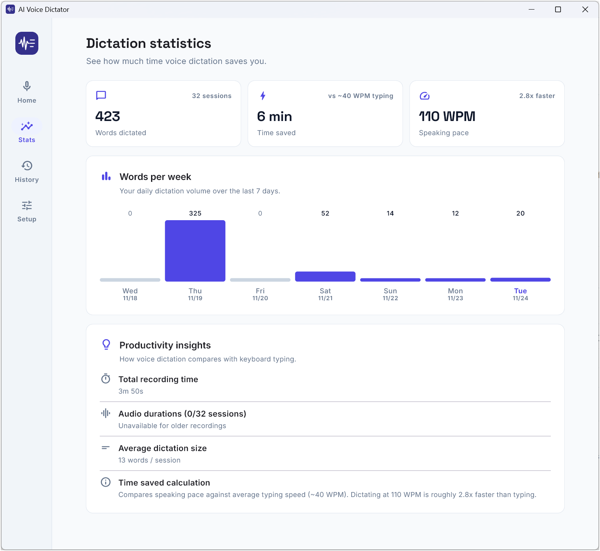
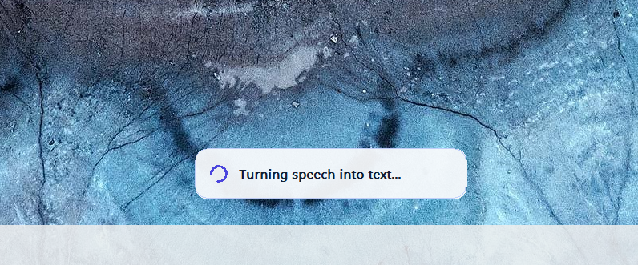
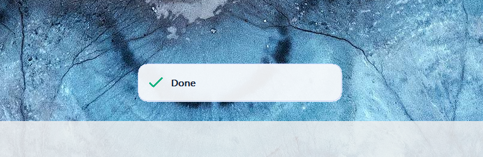

Hold your shortcut
Press and hold Ctrl + Win in your active window.
Turn your thoughts into text wherever you work. Speak naturally in your language, switch between languages, or translate a thought as you speak.
Windows 10 & 11 · Bring your own Gemini API key

A LITTLE LESS BETWEEN YOU AND THE PAGE
From a quick message to a longer thought, start dictating without breaking your flow.
Press and hold Ctrl + Win in your active window.
Say what you want to write. The floating HUD lets you see when it’s listening.
Your speech is processed, then sent to the active field and saved in history.
Prefer hands-free? Press Ctrl + Win + Space to start or stop. Shortcuts are configurable.
SMALL APP. BIG IDEAS.
Everything you need to go from an idea to words on your screen.
Dictate in your language, mix languages in one thought, or use the translation shortcut to write in your chosen language.
The floating HUD shows listening, processing and completion while you work in other apps.
Explore your dictation history, speaking pace and audio duration statistics.
Choose your microphone, shortcuts, Gemini model and dictation prompt in Setup.
TWO WAYS TO DICTATE
Choose how your words arrive. Both modes use your Gemini API key and a microphone.
Record your message, then let Gemini turn it into text with punctuation and formatting. Translation also uses your complete recording.
Turn on live dictation in Setup to send short audio chunks while recording and type completed chunks as they arrive.
Live dictation uses more API requests and may affect punctuation. If live processing fails, the app can recover using the full recording. Review names, numbers and important details.
A LITTLE MORE CLARITY
Find past transcripts in local history, track dictation activity and audio duration, and explore processing details when a response takes longer.

BUILT FOR EVERYDAY WORK
Small details that make voice input feel at home on your desktop.
Hold to dictate, use hands-free mode, or hold the translation shortcut. Configure your shortcuts in the app.
Send text to the active app, try typing mode for fields that block paste, or practice in the built-in playground.
Keep transcripts locally and inspect processing times, including request and network delays.
Choose your microphone, Gemini model, translation language and dictation prompt.
THERE WHEN YOU NEED IT
The floating HUD keeps you informed without taking over your screen. Listen, process, done.
Explore the HUD

A NOTE ON YOUR DATA
Use your own Gemini API key. Audio is sent to Google’s Gemini API for transcription; your transcript history is stored locally and your key uses Windows secure storage.
Read how it worksGOOD TO KNOW
The details to know before your first dictation.
A Windows 10 or 11 PC, a microphone, an internet connection and your own Gemini API key. Download the installer, then save your key and select a microphone in Setup.
Yes. Dictate in multiple languages, including mixed-language speech. The translation shortcut uses your selected target language and processes the complete recording.
Experimental live dictation sends short audio chunks while you speak and types each completed chunk. Response speed depends on Gemini and your connection; additional requests can use more API quota.
Each recording is limited to 12 MiB before encoding, about 6.5 minutes at 16 kHz mono. Actual duration depends on the audio format. Keep longer dictations in shorter sections.
Audio is sent to Google?s Gemini API. Transcripts are kept in local history and copied to your clipboard; release builds delete temporary recordings after processing. You can change history retention or clear history in the app.
No. The app needs an internet connection to send audio to Gemini for transcription.
READY WHEN YOU ARE
Download AI Voice Dictator and let your ideas do the talking.
Download for Windows